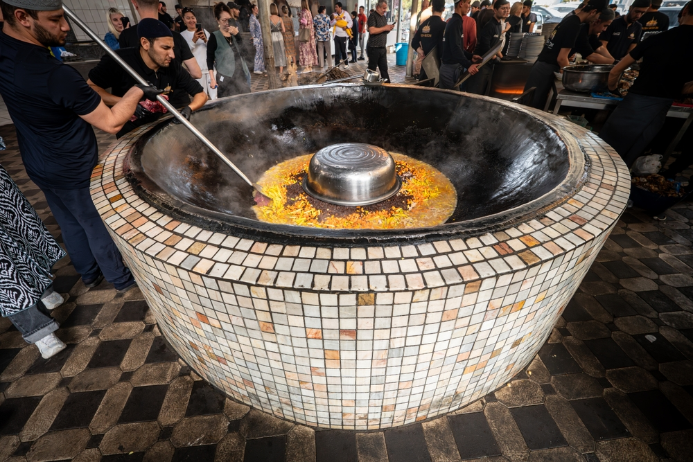
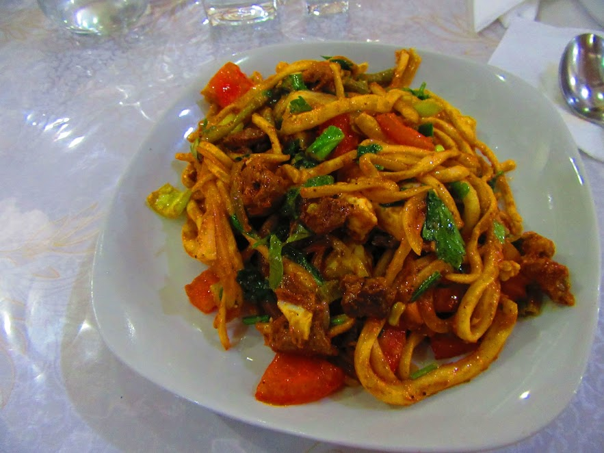
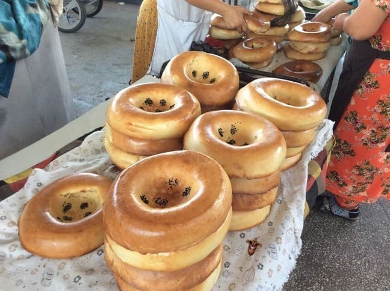

旅程シミュレーター
左側のルートをクリックすると、お手持ちの写真（地下鉄、レギスタン広場など）と共に詳細が表示されます。
シルクロード・ルートマップ
タシケントからヒヴァまで、訪問先を地図上で確認できます。
現地の絶品グルメ
ウズベキスタンで絶対に外せない伝統料理。都市ごとに少しずつ味が異なります。

プロフ (Plov)
国民食の炊き込みご飯。羊肉、ニンジン、ひよこ豆が入ったスタミナ料理です。

シャシリク (Shashlik)
炭火でじっくり焼いた串焼き肉。玉ねぎのスライスと一緒に食べるのが定番。

ラグマン (Lagman)
手打ち麺を使った具沢山のうどん。トマトベースのスープが日本人の口にも合います。

ナン (Non)
都市によって模様や厚みが異なる主食パン。サマルカンドのナンは特に有名です。
🚄 アフラシャブ号の予約
最新の車両は非常に人気です。1〜2ヶ月前のオンライン予約を強く推奨します。
📱 移動アプリ
配車アプリ「Yandex Go」は必須。ぼったくりを回避でき、非常に快適です。